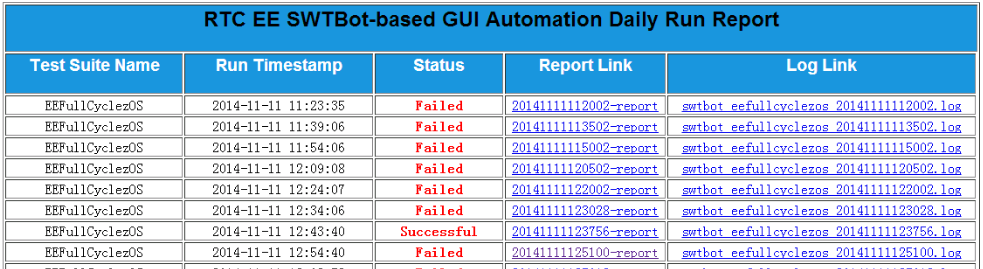

Python在Jenkins上的持续集成--nose单元测试，代码覆盖率以及pylint代码质量审查
一说起持续集成，大家的固有印象就是Java。诚然，Java占了持续集成的半壁江山。可是，这是否意味着Python、Ruby、Node这样的脚本语言就跟持续集成扯不上关系呢？答案显然是否定的！其实不论什么语言，单元测试，代码覆盖率，以及静态代码检查这些软件工程的实践都是通用的。本文，我们将从一个实际的Pyghon项目，系统地学习一下在Python项目中该如何开展持续集成，包括使用nose框架做单元测试和覆盖率，以及使用pylint工具来检查代码质量。
文章分为上下两篇两部分，上篇讲述了如何在本地环境对一个Python项目做单元测试、覆盖率测试以及代码质量审查；下篇我们将把注意力从本地转移到Jenkins上来，系统地讲述一下如何将这些步骤跟Jenkins持续集成结合起来。
上篇——本地小试牛刀
创建目录结构
现在，我们从零开始，先在本地创建一个本文将要使用的Python项目。这里，我们的工作目录是~/dev/project1,在该工作目录下，我们创建了project1文件夹用来放置我们的Python源代码；接着，我们又创建了tests文件夹用来放置单元测试的测试用例文件。最后，我们还分别为这两个文件夹添加init.py文件，这样，这两个文件夹就能被Python识别为package包了。
mkdir -p ~/dev/project1
cd project1 ...程序员,请用好你手中的武器
作为程序员的我们，平常工作中，最经常使用的软件(工具)可以说是非终端Terminal莫属了。甚至可以毫不夸张地说：要是在战争年代，那么终端就是程序员手中的武器。
可是，你们看看周围，平心而论，大家真得都把手中的武器用得娴熟了吗？这些天通过对周围同事日常终端操作习惯的观察，我发现，事实情况并不是那么乐观。首先，先来看几个真实的案例——
案例一：

案例二：

案例三：

看了上述图片，你一定很气愤，怎么可以使用这么低效的方式使用终端！我们可是天天跟电脑打交道的程序员啊不是吗！然而遗憾的是，这种情况并非少见。
此刻屏幕前的你，如果从这3个活生生的例子中隐约看到了自己的影子，那么也不要太自责。相信我，只需花上几分钟时间接着把这篇文章看完，然后打开自己的终端，稍微跟着下文的指南练习一下，一定会有不少收获的。在本文的末尾，我们还会一起返回来看看上面这3个例子中，到底应该如何更有效率的光标移动？
那么，就趁现在，就打开你的终端，对照着下面的命令，熟悉一遍操作吧：
光标移动
Ctrl + a# 将光标移至行首Ctrl + e ...
(译) PEP 333 - Python Web Server Gateway Interface v1.0 中文版
PEP 333 - Python Web Server Gateway Interface v1.0 中文版
============
翻译自
Python Web Server Gateway Interface v1.0PEP 333 - Python Web Server Gateway Interface v1.0
译者的话
Python基础学完后，免不了要深入到Python的主流Web框架（Python科学计算那部分暂时用不到可以先不管），在学习Flask这些框架的过程中发现它们的底层都是WSGI协议，故决定先啃下WSGI，鉴于目前网上几乎没有（完整的）WSGI中文版，于是干脆自己翻译，这样也有助于加深自己的理解，也能够帮助到一些初学者。
内容
- 序言
- 摘要
- 基本原理及目标
- 规范概述
- 应用程序/框架 端
- 服务器/网关 端 ...
(译) 几分钟学习一门编程语言之Python篇 (最新版)
几分钟学习一门编程语言之Python篇 (最新版)
翻译自
Learn X in Y Minutes: Where X = PythonLearn X in Y Minutes: Where X = Python
Python由Guido Van Rossum发明于90年代初期，是当今最流行的编程语言之一，我深深被它清晰简洁的语法所折服并从此爱上了它。Python的代码之简洁，几乎就是可执行的伪代码。
若能提供给我们反馈，将非常欢迎！你可以通过推特@louiedinh或邮箱louiedinh AT gmail来联系我。
请注意：本文是专门针对Python 2.7的，但应该同样也适用于Python 2.x的。至于 Python 3.x，请阅读我们最新的指南 Learn X in Y ...
more ...(译) 迭代器和生成器
迭代器和生成器
翻译自:
5.Iterators & Generators5.Iterators & Generators
5.1. 迭代器(Iterators)
首先，我们用for循环来循环遍历一个列表(list)。
>>> for i in [1, 2, 3, 4]:
... print i,
...
1
2
3
4
假如我们将for循环用在一个字符串中，它将会遍历字符串的每一个字符。
>>> for c in "python":
... print c
...
p
y
t
h
o
n
假如我们将for循环用在一个字典中，它将遍历字典的每一个 ...
(译) WSGI基础知识
WSGI 基础知识
翻译自
Basics of WSGIhttp://agiliq.com/blog/2013/07/basics-wsgi/
在这篇文章里，我们将会写一个web app，这个app它会服务一些url。我们将不会使用任何Python框架来写它。我们只是去说明一下这些机制的背后原理。
在开始写这个web app之前，我们先来澄清几个下文将要用到的术语。
-
Web服务器(Web Server): 当我们说Web 服务器时，我们指的是软件，而不是那些存储你代码的硬件机器。这个服务器会接收从客户端(Web浏览器)发送过来的请求并返回一个响应(response)。Web服务器本身并不创建响应，它只负责返回响应。所以，Web服务器就需要同Web应用程序交流，因为Web应用程序它能产生响应。
-
Web应用程序(Web Application):Web服务器从它这里拿到响应。Web Application的职责就是根据url来创建响应并将响应传回给Web服务器。然后Web服务器就只是返回这个响应到客户端而已。
-
WSGI: WSGI是一个接口，它只是一份规范或者说是一系列的规则。WSIG不是一个软件。
WSGI会引起人们的注意是因为Web服务器需要跟Web应用程序通信 ...
more ...Chrome的Github插件Octotree
Chrome在线安装地址：Octotree
安装上之后，Github的效果如下，更像IDE了，真的非常棒的一个插件，推荐给需要的人。
我的Github：https://github.com/mainframer
Python删除文件夹下所有特定类型文件
写了个递归删除一个或多个文件夹下所有bmp图片的脚本：
import os
def del_bmp(root_dir="C:\temp"):
"""
@Function: Delete all bmp image file in root_dir and its subdirectory
@root_dir: The target directory
"""
file_list = os.listdir(root_dir)
for f in file_list:
file_path = os.path.join(root_dir, f)
if os.path.isfile(file_path):
if f.endswith(".BMP") or f.endswith ...Python中range和xrange区别
所有Python的学习者都会遇到这个问题，range和xrange都可以是列表生成器，它们有什么区别？
range
函数说明：range([start,] stop[, step])，根据start与stop指定的范围以及step设定的步长，生成一个序列。range一上来就直接开辟一大块内存，返回一个完整list对象。
xrange
函数说明：用法与range完全相同，所不同的是生成的不是一个list对象，而是一个生成器，在每次调用时返回其中的一个值。
所以显而易见，除非你真的是想一次性返回整个列表，否则，在循环中，xrange的性能要大大优于range，特别是列表很大或者内存吃紧的时候，所以，循环中请尽量用xrange.
more ...解决Python往文件中插入多行字符串时的一个小问题
用Apache搭了一个最简单的Http服务器，每一次自动化脚本跑完之后要往http服务器的首页insert一条记录。
截图：

往Html源文件插入一行的代码如下所示：
def modify_index_html(apache_dir, log_path):
"""
Function:Update the index.html to reflect the run result to the overall report
@apache_dir: Apache http server folder:"C:\\Program Files (x86)\\Apache Software Foundation\\Apache2.2\\htdocs\\"
@log_path: the path to the log generated in this run
"""
logger.info("Updating ...